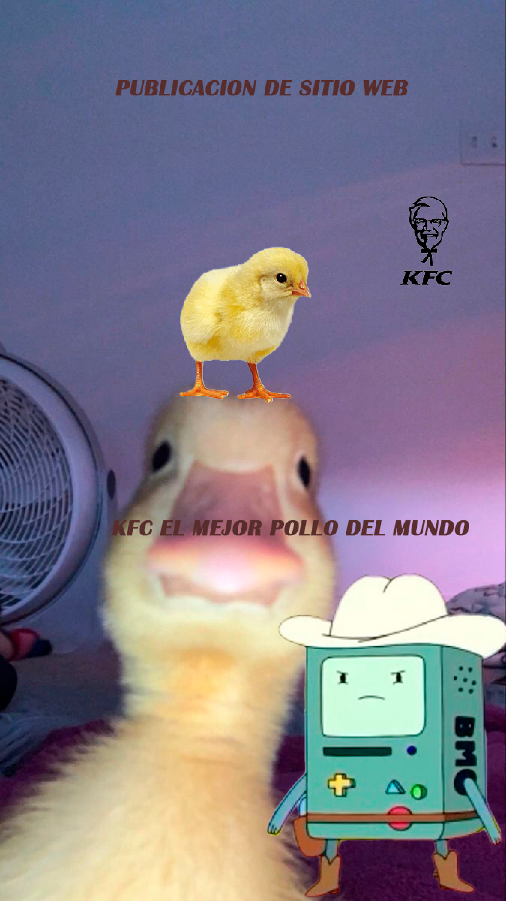
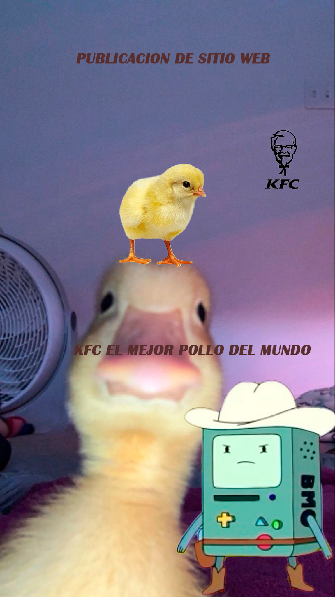
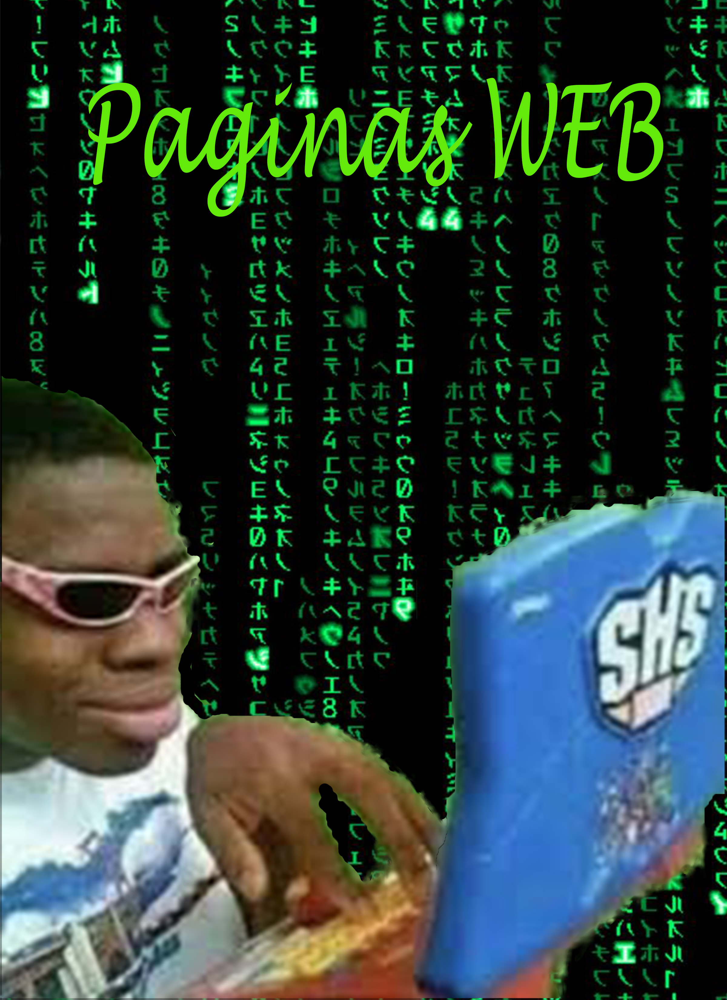
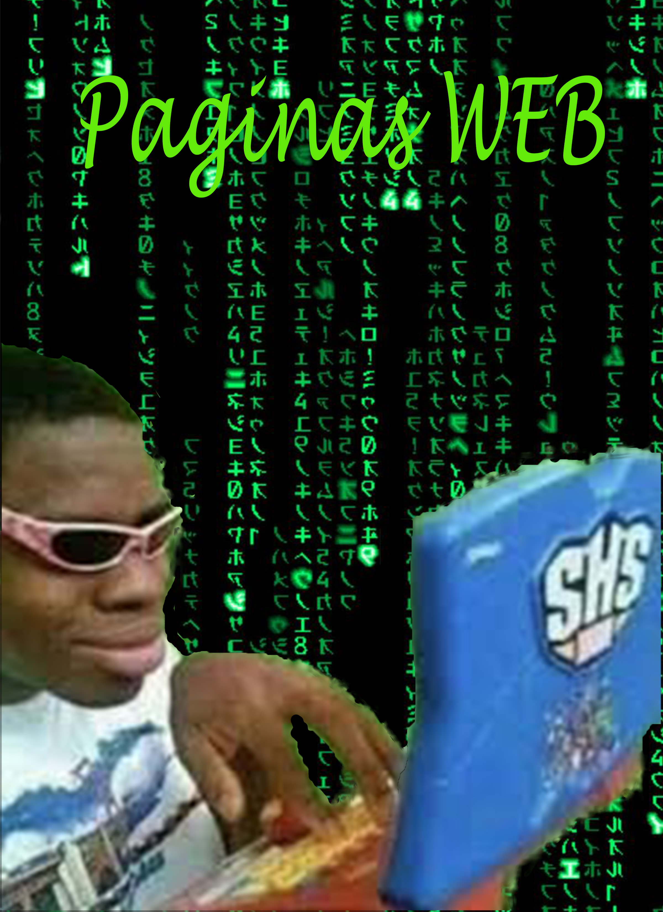
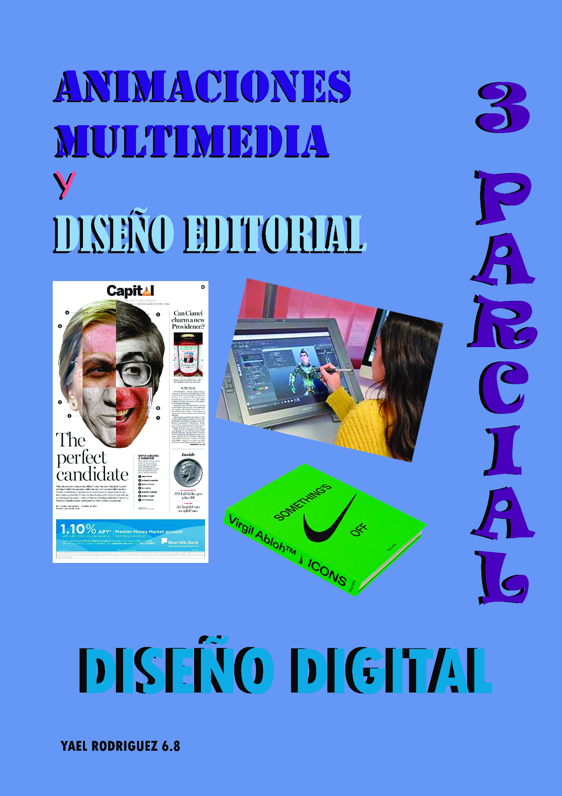

Grand Thef Auto V

Grand Theft Auto V (comúnmente abreviado como GTA V o Grand Theft Auto V: Modo historia) , es la decimoquinta entrega de la saga Grand Theft Auto que fue lanzado el 17 de septiembre de 2013 para las consolas Xbox 360 y PlayStation 3.
Tras debutar en la séptima generación de consolas en 2013, se re-estrenó un año después bajo el nombre Expandido para PlayStation 4, Xbox One y con un año de retraso en PC, con algunas mejoras tanto estéticas como la adquisición de jugar en primera persona. El 18 de mayo de 2021, Rockstar da a conocer mediante un "Stay to Play" de Sony la fecha de lanzamiento de las versiones de PlayStation 5 y Xbox Series X/S bajo el nombre de "Expandido y Mejorado", que iba a ser el 11 de noviembre de ese mismo año. Sin embargo, el 9 de septiembre se anunció el atraso de la fecha de lanzamiento hasta el 15 marzo de 2022. Para estas versiones, el juego pasó a llamarse Grand Theft Auto V: Modo historia, haciendo que ahora se necesite comprar Grand Theft Auto Online por separado.
Descripción modo Historia:

Los Santos, una extensa metrópolis llena de gurús de autoayuda, aspirantes a estrellas y famosos en decadencia tratando de mantenerse a flote en una era de incertidumbre económica y tele por cable barata. En medio de esta confusión, tres criminales muy distintos lo arriesgan todo en una serie de audaces y peligrosos asaltos que podrían solucionarles la vida.
Nueve años después de un robo fallido en la ciudad ficticia de Ludendorff, North Yankton, el ex ladrón de bancos Michael Townley y su familia se mudaron a Los Santos con una nueva identidad.
Mapa
Michael lleva una vida normal pero aburrida, hasta que se encuentra con Franklin Clinton, un gángster que busca ascender en el inframundo de Los Santos, e inesperadamente se encuentra con Trevor Philips, el único otro sobreviviente del robo a un banco en Ludendorff. Los tres unen sus fuerzas para llevar a cabo una audaz tarea de robar el Union Depository y apoderarse de decenas de millones de dólares en oro. Sin embargo, los federales corruptos se aprovechan del trío, usándolos para llevar a cabo su propia agenda, así como numerosos enfrentamientos con bandas rivales y otros delincuentes.
Protagonistas
En este juego esta una caracteristica unica la cual es que hay 3 protagonistas principales y uno como jugador puede cambiar a alguno de los 3 en cualquier momento
Estos protagonistas como y ahabiamos dicho son los siguientes:
Michael De Santa |
Trevor Philips |
Franklin Clinton |
|---|---|---|
En otros tiempos fue uno de los hombres más buscados de América por su reputación de gran ladrón de bancos. Pero eso es parte del pasado. Ahora está retirado, jubilado, viviendo bajo el auspicio del programa de protección de testigos de FIB en el que recaló tras utilizar sus contactos dentro de agencias federales para sacarle de la primera línea de fuego y empezar de cero. No sabemos a cambio de qué. Pese a haber conseguido el sueño americano de todo criminal, Michael es infeliz, se siente miserable: vive en una lujosa mansión con piscina y pista de tenis, en el exclusivo barrio de Rockford Hills, pero está atrapado en un matrimonio insípido con su mujer Amanda, con sus hijos Tracey y James, dos niños mimados con los que no consigue conectar. En apariencia Michael parece tenerlo todo, pero en realidad está aburrido, frustrado y a punto de explotar. El único desahogo que tiene es pasarse los días bebiendo whisky, ver antiguas películas de acción criminal de Vinewood, visitar de vez en cuando a su psiquiatra y, finalmente, volver a la vida delictiva que lo llevó a esa situación. |
Un sociópata, expiloto del ejército que vive en una caravana en medio del campo junto al lago Alamo Sea, entre excesos de alcohol y drogas, y que acostumbra a despertarse desnudo, en calzoncillos, con unas resacas épicas. Es extremadamente violento y sólo Michael consigue tenerlo bajo control; estuvieron juntos en otros trabajos antes de los acontecimientos de GTA V, hace mucho tiempo. Ahora, Trevor tiene una afinidad manifiesta por codearse con traficantes de metanfetamina y bandas de motoristas tal como hemos visto en su trailer, que no se lleva bien con los Lost de GTA IV. Desaliñado, descuidado en su higiene personal y mentalmente inestable, nos ha sorprendido también con varias intervenciones cómicas y cumplidos espontáneos como "mmmffff... bonitas tetas nuevas". |
Es joven, listo y ambicioso. Se encuentra cómodo actuando a ambos lados de la ley. Franklin trabaja con su amigo Lamar embargando coches como "repo men" para un prestamista y vendedor armenio sin escrúpulos llamado Simeon Yetarian. En uno de sus encargos coincide casualmente a Michael, a quien ve como una figura criminal paterna, un padrino de quien aprender en el negocio y especialmente, con quien poder tener la oportunidad de dar grandes golpes y convertirse en un pez gordo. Franklin es un conductor muy capaz, todo un "transporter". Vive en South Los Santos pero después de la misión asesinato en el hotel se traslada a Vinewood Hills. Después de Chop (misión) lamar le regala a su perro Chop para que lo cuide ,entrene y juegue con él. |
Curiosidades
Es el primer juego de la saga GTA en tener animales interáctuables como perros, venados, pumas, etc.
Es el primer juego de Grand Theft Auto en que cada protagonista tiene habilidades especiales.
Es el primer juego de la Saga en donde se pueden controlar a tres Protagonistas simultáneamente y no solo uno, como en entregas anteriores.
Es pionero en el número de antagonistas, abarcando más que cualquier otro título.
Esta es la entrega de toda la saga en tener el mapa más grande.
Es el juego de la saga que mas música se compuso para el. Un tiroteo, un robo coches, una misión, un salto en paracaídas, todo tiene su propio sistema de sonido.
Es el juego en el que más protagonistas principales mueren (A elección del jugador).
Es el primer Grand Theft Auto en el que se puede personalizar las armas.
Grand Theft Auto V duro 5-6 años en desarrollarse, convirtiéndose en el juego de la saga que más a tardado en desarrollarse.
Grand Theft Auto V gano un total de 7 records en sus primeras semanas :
1- Videojuego de acción-aventura mejor vendido en 24 horas.
2- Videojuego mejor vendido en 24 horas.
3- Propiedad del entretenimiento más rápida en ganar mil millones de dólares.
4- Videojuego más rápido en ganar mil millones de dólares.
5- Videojuego con más ganancias en 24 horas.
6- Taza de recuperación más alta generada por un producto del entretenimiento en 24 horas.
Integrantes
(Dar click en cada nombre para ver los trabajos)
 _
_


 _
_

 _
_
 _
_

_.jpg)
_
_
.gif)
.gif)
(1).gif)